Identifying immunologically-vulnerable regions of the HCV E2 glycoprotein and broadly neutralizing antibodies that target them
Contents
- Setting up paths (of functions and data files required) and necessary parameters
- 1. Preprocessing of the PV sequence data downloaded from NCBI
- 2. Inferring the model representing the prevalence landscape of vp1 using ACE
- 3. Statistical validation of the inferred model
- 4. Experimental and clinical validations
- Mapping of deltaE_i values on the available crystal structure of E2
- Comparison of fitness costs associated with different regions targeted by HmAbs
- Comparison of fitness costs associated with the binding residues of known HmAbs
Setting up paths (of functions and data files required) and necessary parameters
clear all;close all;clc addpath data % addpath functions run startup.m set(0,'DefaultAxesFontName','Arial') set(0,'DefaultTextFontName','Arial') set(0,'DefaultAxesFontSize',10) set(0,'DefaultTextFontSize',10) run_scripts = 0; %1 = yes, run the scripts. Note that this would take very long time... %0 = no, use saved data.
1. Preprocessing of the PV sequence data downloaded from NCBI
% HCV genotype 1a E2 sequences were downloaded from the Los Alamos National % Laboratory (LANL) HCV sequence database (https://hcv.lanl.gov; % accessed Sep. 25, 2017) % Header format: Name.PATid.Accession.Subtype.Country.SamplingYear inputfile = 'HCV_E2_aa_align_sequences_1909.fasta'; [X,w] = preprocessing_data(inputfile);
----------------------------------------------------------------------------------- Sequence data (MSA) statistics ----------------------------------------------------------------------------------- Number of residues, L = 363 Number of conserved residues = 11 Number of mutating residues = 352 Number of sequences = 3363 Number of unique patients, N = 1298
2. Inferring the model representing the prevalence landscape of vp1 using ACE
% Code for running MPF-BML is freely available at <https://github.com/raymondlouie/MPF-BML>.
MPF-BML input: MSA matrix "X" and weight vector "w".
MPF-BML output: Maximum entropy model parameters (fields and couplings)
load MPF_BML_output.mat msa_aa_ex = msa_bin; [~,L] = size(msa_aa); % L is the total number of residues in E2 [~,L_ex] = size(msa_aa_ex); % L_ex is the length of the Potts binary extended MSA L_mut = length(ind_non_conserve); % L_mut is the number of non-conserve (mutating) residues in E2 H = reshape(J_mat,L_ex,L_ex); % Model-paramters matrix which consists of inferred fields on its diagonal % and inferred couplings on the upper triangular matrix. phi_curr = num_mutants_combine_array; %Number of mutants at each residue mutant_order = amino_single_combine_array; %Identity of mutants at each residue phi_cumulative(1) = phi_curr(1); for kk = 2:length(mutant_order) phi_cumulative(kk) = sum(phi_curr(1:kk)); end %Cumulative sum of the number of mutants at each residue % Generating samples from the inferred model using a Markov Chain Monte Carlo (MCMC) method if run_scripts samples_MCMC = generate_samples_MCMC(H,msa_aa_ex,phi_curr,phi_cumulative,... L_mut,L_ex,w); else load samples_MCMC_E2_99900.mat end
3. Statistical validation of the inferred model
% Single mutant probability, double mutant probability, and distribution of % the number of mutations model_statistical_validation(msa_aa_ex,w,samples_MCMC,phi_curr,L_mut) % Triple mutant probability if run_scripts == 1 [p3_data, p3_sampler] = compute_triple_mutant_probability(msa_aa,... phi_curr,mutant_order,ind_conserve,samples_MCMC,w); else load three_point_correlations_E2 p3_data p3_sampler end plot_triple_mutant_probability(p3_data,p3_sampler)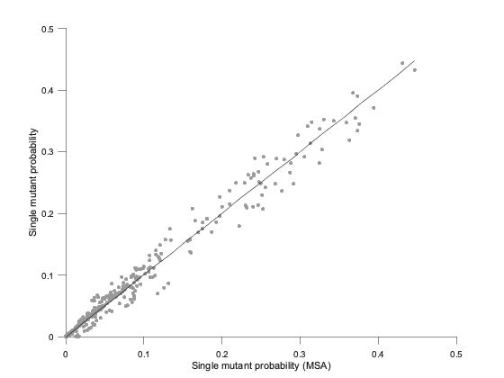 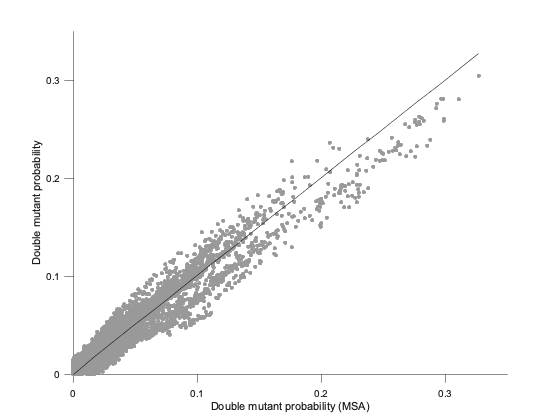 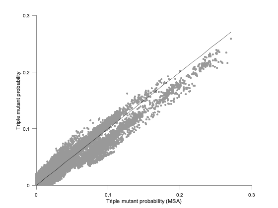
4. Experimental and clinical validations
In silico predicted energy vs in vitro replicative fitness measurements
% Energies predicted using the inferred model which incorporates the % effects of mutations at individual residues as well as interactions % between mutations at different residues method = 1; energy_vs_fitness(method, msa_aa_ex, msa_aa, phi_curr, mutant_order, ... H, ind_non_conserve); % Energy predicted using the model which incorporates only the effects of % mutations at individual residues method = 2; energy_vs_fitness(method, msa_aa_ex, msa_aa, phi_curr, mutant_order, ... H, ind_non_conserve);
 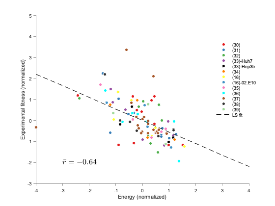
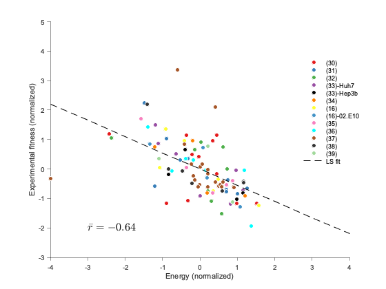 Comparison of fitness costs associated with known escape mutations and the mutations at other residues
% Computing deltaE_i first if run_scripts==1 deltaE_i = compute_deltaE(samples_MCMC,msa_aa,phi_curr,mutant_order,... ind_non_conserve,ind_conserve,H); else load data_fitnessCosts_E2_99900 deltaE_i = dE2; end compare_deltaE_known_escape_mutations(deltaE_i,L)
P = 1.7e-10, Mann-Whitney test
Comparison of fitness costs associated with mutations at exposed residues those at buried ones
compare_deltaE_exposed_buried_residues(deltaE_i)
P = 9.0e-03, Mann-Whitney test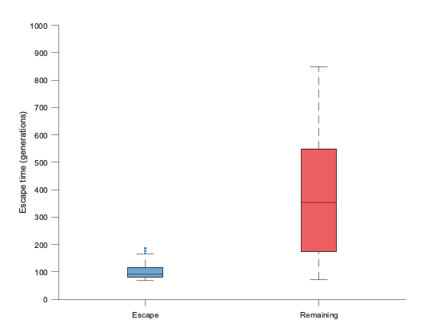
Comparison of fitness costs associated with T cell epitopes associated with spontaneous cleanrance
compare_deltaE_Tcell_epitopes(deltaE_i,ind_non_conserve)
P = 3.0e-02, Mann-Whitney test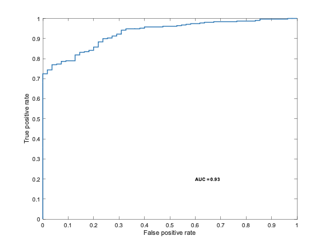 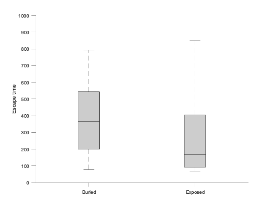
Mapping of deltaE_i values on the available crystal structure of E2
mapping_crystal_structure_pymol(dE2) % The above code generates the text file required in Pymol for creating the % heatmap. The code to run in Pymol is provided in "Pymol_code.docx" file.
Warning: File 'dE2_crystal_structure_4mwf_allatoms.txt' not found. pymol_input_hvr1 = select HVR1, resi +384+385+386+387+388+389+390+391+392+393+394+395+396+397+398+399+400+401+402+403+404+405+406+407+408 pymol_input_cd81 = select cd81bs, resi +420+421+424+427+430+432+436+437+438+440+441+442+443+523+526+527+529+530+535+540+549+550+613+614+616+617+618 pymol_input_HC331 = select HC331, resi +413+418+420 pymol_input_CBH23 = select CBH23, resi +494+508+509+537+539+549+552+554+564+611+614+644
Comparison of fitness costs associated with different regions targeted by HmAbs
compare_deltaE_antigenic_domains(deltaE_i)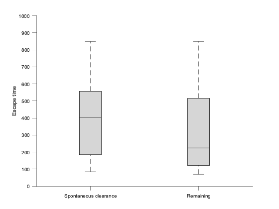
Comparison of fitness costs associated with the binding residues of known HmAbs
compare_deltaE_HmAbs(deltaE_i)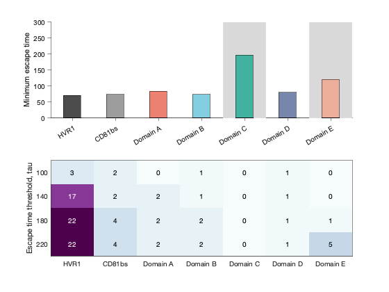
 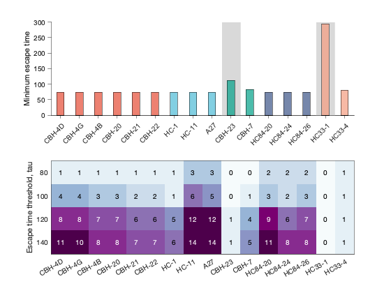
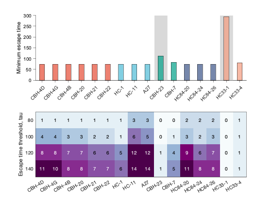